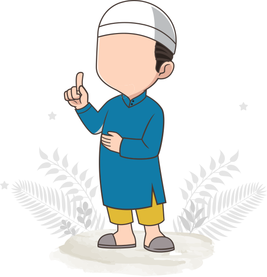
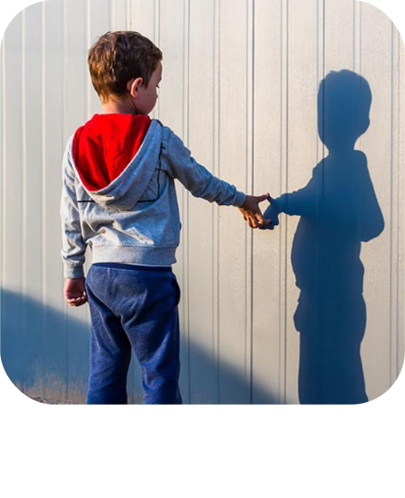

ماهو التوحد
ماهو التوحد
التوحد أو ما يعرف باضطراب طيف التوحد – ASD هو اضطراب ّد مجموعة من التحديات أو الصعوبات في المهارات عصبي يول الاجتماعية، تبدأ من عمر الطفولة وتستمر طوال حياة الإنسان.
التوحد ليس نوعا واحدا فحسب ، بل يتفرع إلى عدة أنواع يعود سببها لمجموعة من العوامل والتأثيرات الوراثية والبيئية المختلفة.
إن مصطلح "طيف" يعكس مدى التباين الواسع في التحديات والقوى التي يمتلكها كل طفل مصاب بهذا الاضطراب ويمكن تصنيفها تحت المستويات ١ ،٢ ،أو ٣ بحسب شدة العوارض، تظهر بين سن الثانية والثالثة، وفي بعض ً فأعراضه الأكثر وضوحا . ً الحالات يمكن تشخيصه في سن ١٨ شهرا لمنظمة ً "معدل انتشار اضطراب طيف التوحد حول العالم" وفقا الصحة العالمية: طفل من كل ١٦٠ طفل حول العالم مصاب ً لمركز التحكم بالأمراض والوقاية باضطراب طيف التوحد. ووفقا منها الأمريكي (CDC (فإن معدل انتشار اضطراب طيف التوحد في الولايات المتحدة الأمريكية: • في عام ٢٠٢٠م (طفل من كل ٥٤ طفل) مصاب باضطراب طيف التوحد.
بعض الصفات المرتبطة بالتوحد يمكن اكتشافها وعلاجها في مرحلة متقدمة، ويمكن تمييز هذه الحالات من خلال عدة أعراض محتملة، والتي يمكن أن تتضمن ما يلي:

تجنب التواصل وتفضيل العزلة
صعوبة في فهم الآخرين.
التواصل الغير لفظي أو التأخر اللغوي وتكرار الكلمات والعبارات.
الضيق والانزعاج من أي تغييرات في الروتين اليومي أو المحيط.
ردة الفعل المبالغ بها تجاه الأصوات، الروائح، المذاق، الملمس، الألوان، أو الإضاءة.
سلوكيات متكررة كالرفرفة والدوران والهزهزة.
نمطية الاهتمامات وتقييدها والحد منها.
تبقى المسببات لاضطراب طيف التوحد غير واضحة، ومع ذلك، أثبتت الأبحاث والممارسات الطبية أنه يمكن للعاملين الوراثي ً بتسببه. والجدير بالذكر أن الذكور أكثر مهما ً والبيئي أن يلعبا دورا عرضة للإصابة باضطراب طيف التوحد من الإناث بنسبة أربعة أضعاف.
ماهي مسببات التوحد؟
مما نعرفه الآن فإنه لا يوجد مسبب متفرد للإصابة باضطراب طيف التوحد. وتقترح الأبحاث أن التوحد ينشأ من تواجد هذه العوامل الجينية وغير ً الجينية والبيئية مجتمعة. ويجدر التنويه أن تأثير هذه العوامل على احتمالية الإصابة بالتوحد لا يجعل منها مسببا بحد ذاتها. فعلى سبيل المثال فإنه من الممكن تواجد بعض التغييرات الجينية المرتبطة بالتوحد لدى غير المصابين به. وكذلك ليس من الضروري أن يساهم تعرض أحدهم لإحدى هذه العوامل المؤثرة أن يؤدي به إلى الإصابة باضطراب طيف التوحد بل على الأرجح أن الغالبية العظمى لن يصابوا.
عوامل وراثية:
توصلت الأبحاث أن الإصابة بالتوحد ترجح إلى أن تكون وراثية في الأسر، فالتغييرات التي قد تحدث في جينات معينة تزيد من احتمالية الإصابة. فإذا كان أحد الوالدين يحمل إحدى هذه الجينات المتغيرة أو عدة منها، فإن احتمالية إنجاب طفل ذو اضطراب طيف توحد تزداد حتى وإن لم يكن ً إحدى الوالدين أو كلاهما مصابين به. وفي أحيان أخرى، تنشأ هذه التغييرات الجينية من تلقاء نفسها في الجنين (المضغة) مبكرا أو في الحيوان ً المنوي و/أو في البويضة التي تكونان الجنين. مجددا فإن غالبية التغييرات الجينية لا تسبب التوحد بمفردها، لكنها ببساطه تزيد من احتمالية الإصابة بهذا الاضطراب.
عوامل بيئية:
تظهر الأبحاث أن بعض التأثيرات البيئية قد تزيد أو تحد من احتمالية الإصابة بهذا الاضطراب عند الأفراد الذين لديهم قابلية وراثية. والأهم من ذلك، فإن ازدياد عامل الخطر أو نقصانه يظل تأثيره ضئيل/ ضعيف في أي من هذه العوامل التالية: تزداد احتمالية الإصابة عند:
تقدم عمر كلا الوالدين أو أحدهما.
مضاعفات الحمل والولادة (مثل: ولادة طفل خديج قبل ٢٦ أسبوع، ولادة طفل بوزن أقل من المعدل الطبيعي، تعدد الحمل (توأم أو أكثر... إلخ).
تقارب فترات الحمل والتي تكون أقل من سنة.
تقل نسبة الإصابة عند:
تناول فيتامينات الحمل التي تحتوي على الفوليك أسيد قبل الحمل، وفي مرحلة التخصيب، وخلال فترة الحمل.
غير مؤثرة على نسبة للإصابة:
التطعيم إن كل عائلة لديها تجربة مختلفة في تشخيص اضطراب طيف التوحد، والتي تتزامن عند بعضهم مع وقت تلقي طفلهم التطعيمات. لذلك، أجرى الباحثون دراسة واسعة في العقدين الأخيرين ُ ليتسنى لهم التثبت فيما لو وجد رابط بين تطعيمات مرحلة الطفولة واضطراب طيف التوحد، وكانت نتائج هذا البحث واضحة، أكدت فيها أن التطعيمات لا تسبب اضطراب طيف التوحد. الاختلافات بيولوجية الدماغ
كيف بإمكان العوامل المؤثرة الجينية وغير الجينية أن تساهم في حدوث اضطراب طيف التوحد؟ قد أبدت العديد من هذه العوامل تأثيرا على ً جوانب مهمة في وقت مبكر خلال نمو الدماغ. فبعضها يظهر تأثيرا على طريقة اتصال الخلايا العصبية أو العصبون مع بعضها البعض، ً والبعض الآخر يظهر تأثيرا على طريقة اتصال المناطق المختلفة من الدماغ مع بعضها البعض. ولا زالت الأبحاث مستمرة لاستكشاف هذه الاختلافات مع التركيز على تطوير الجانب العلاجي والدعم للتحسين من جودة حياة الأفراد المصابين.
أصول المصطلح
لقد استخدم مصطلح "التوحد" للمرة الأولى في عام ١٩١١م من قبل الطبيب النفسي يوجين بلولير حينما كان يعاين بعض المرضى المعتقد أنهم مصابون بمرض الانفصام الشخصي. ولقد استمدت الكلمة ذاتها من العبارة الإغريقية "أوتوس"، والتي تعني ً "الذات"، وتقوم هذه العبارة بوصف الحالات التي تميل إلى العزلة عن الآخرين. أول من عرف التوحد كمتلازمة أعراض سلوكية هو طبيب أطفال نفسي يدعي "ليو كانر" (Kanner Le
هل تعلم ؟
الذكور هم أكثر عرضة للإصابة باضطراب ّ التوحد عن الإناث بنسبة أربع أضعاف
40%
من الأطفال المصابين ّ باضطراب التوحد لا يتكلمون
تأثيرات التوحد
كل 1 من أصل 59 طفل
التشخيص
لا يوجد اختبار طبي واضح لتشخيص الاضطراب، فلا يمكن لتحليل الدم أو المسح الإشعاعي للدماغ أن يكون دليل دامغ لتشخيص اضطراب طيف التوحد. على الرغم من أن الباحثين يحاولون بنشاط مكثف لتطوير مثل هذه الاختبارات ومقاييس التشخيص. في الوقت الحالي، يعتمد الأطباء/ المختصون الإكلينيكيين في تشخيص اضطراب طيف التوحد على ملاحظة سلوك والسلوكيات التكرارية ً الطفل لتحديد وجود الأعراض الأساسية للتوحد وهي: صعوبات في التواصل، وعدم التفاعل اجتماعيا والمقيدة.
إقرأ المزيدالتشخيص
يمكن القيام بتشخيص حالة ذوي اضطراب طيف التوحد عن طريق خطوتين كما يلي:
الفحص النمائي:
هو فحص مختصر يدل على ما إذا كان الطفل يتعلم المهارات الأساسية بسهولة أم لديه صعوبة في ذلك.
يطرح الطبيب عدة أسئلة على ذوي الطفل وعلى الطفل نفسه أثناء الفحص لمراقبة كيفية استجابته من حيث الحركة والكلام وردة الفعل، حيث يؤخذ بعين الاعتبار التأخر في أحد هذه المهارات.
التقييم التشخيصي الكامل:
هو مراجعة شاملة، تشمل النظر إلى سلوك الطفل ونموه وإجراء فحص السمع والرؤية، والفحص ً مقابلة مع أسرته، وتشمل أيضا الجيني، والفحص العصبي، والاختبارات الطبية الأخرى
في بعض الحالات، يمكن أن يختار الطبيب إحالة الطفل وعائلته إلى اخصائي بهدف التشخيص والتقدير الإضافيين، إذ الأخصائيين القادرين على القيام بهذا النوع من التقييم هم:
طبيب نمو أطفال
طبيب مخ وأعصاب (تخصص أطفال)
طبيب نفسي
أخصائي نفسي
وقد يضم الفريق: أخصائي تربية خاصة، أخصائي نطق وتخاطب، وأخصائي علاج وظيفي
تتحسن جودة الحياة لدى الكثير من الأطفال بشكل كبيرمن خلال تشخيص يؤدي إلى تدخل أو مساندة مدعومة بالدلائل والتي من شأنها أن
تدرك نقاط القوى الفردية والإهتمامات.
اختبار الكشف عن خطر الاصابة باضطراب طيف التوحد (CHAT-M (اختبار قائمة استبيان التوحد عند الأطفال (من عمر ١٦ إلى ٣٠ شهرا
اختبار للكشف وتحديد الأطفال الذين هم في خطر الإصابة باضطراب طيف التوحد، الطريقة هي أثناء مواعيد الفحص الطبي الدوري للطفل في
عمر ١٨ و ٢٤ ً شهرا يتم إعطاء الوالدين اختبار قائمة (استبيان التوحد عند الأطفال) ويطلب منهم الإجابة على ٢٠ سؤال "بنعم أو لا" حول مهارات
ً لنتيجة الاختبار، يقوم الأطباء/ المختصون الإكلينيكيين باستخدام الأدوات التشخيصية التي تحدد ما
الطفل الاجتماعية والحركية واللغوية. تبعا
إذا كان الطفل مصاب باضطراب طيف التوحد أم لا.
تشخيص اضطراب طيف التوحد يستخدم الأطباء/ المختصون الإكلينيكيين نوعين من الاختبارات السلوكية الموثوقة لتشخيص اضطراب
طيف التوحد:
(ADOS (جدول الملاحظة التشخيصية للتوحد: حيث أن الأطباء/ المختصون الإكلينيكيين يلاحظون سلوك الأطفال وكيفية اندماجهم وتفاعلهم في مواقف اجتماعية مختلفة لمدة تصل إلى ساعة
(R-ADI (المقابلة التشخيصية للتوحد: حيث تتم من خلال المقابلة الوالدية.
التفاعل
يواجه الأفراد التوحديون صعوبة في التواصل مع المجتمع المحيط بهم، خاصة أن اضطراب طيف التوحد نفسه يمكن أن يعيق قدرة الشخص على التركيز مما يؤدي إلى الصعوبة في التواصل لفترة طويلة.
إقرأ المزيدالتفاعل
أظهرت الدراسات أن ذوي اضطراب طيف التوحد لديهم الإرادة لمشاركة محيطهم، لكنهم يواجهون صعوبة في التواصل والتركيز، مما يؤدي لفقد هذه الإرادة والانعزال.
تشمل الخصائص التي تؤدي إلى اضطراب طيف التوحد والتي تؤثر على التفاعل الاجتماعي، صعوبة في التعرف على الإشارات الاجتماعية ومعرفة وقت التحدث أو الاستماع، بالإضافة إلى تعابير الوجه التي يصعب قراءتها، مما يؤدي إلى العزلة الاجتماعية.
قد لا يتمكن بعض الأطفال الذين يعانون من اضطراب طيف التوحد من التواصل باستخدام الكلام أو اللغة، وقد يكون لدى الآخرين منهم مفردات غنية ويكونون قادرين على التحدث عن مواضيع محددة بتفصيل كبير.
لدى أطفال التوحد مشاكل مع معنى وإيقاع الكلمات والجمل، كما قد يتعذر عليهم فهم لغة الجسد ومعاني النغمات الصوتية المختلفة، حيث تؤثر هذه الصعوبات على قدرة الأطفال المصابين باضطراب طيف التوحد على التفاعل مع الآخرين، خاصة الأشخاص ً في سنهم.
فيما يلي بعض أنماط استخدام اللغة والسلوكيات التي توجد غالبا في الأطفال المصابين باضطراب طيف التوحد.
لغة متكررة أو جامدة:
غالبا ما يقول أطفال ذوي اضطراب طيف التوحد أشياء لا معنى لها أو لا تتعلق بالمحادثات التي تدور مع الآخرين، على سبيل المثال: قد يحسب الطفل من واحد إلى خمس مرات بشكل متكرر وسط محادثة لا تتعلق بالأرقام.
أو قد يكرر الطفل الكلمات التي سمعها باستمرار وهي حالة تسمى الصدى. يحدث الصدى عندما يكرر الطفل الكلمات التي قالها شخص ما للتو، فعلى سبيل المثال: قد يرد الطفل على سؤال بطرح نفس السؤال.
وهناك حالة تسمى الصدى المتأخر فيها يكرر الطفل الكلمات المسموعة في وقت سابق. يتحدث بعض أطفال ذوي اضطراب طيف التوحد بصوت عالي النغمة أو يغنون أغنية أو يستخدمون ً خطابا يشبه الروبوت، حيث يستخدم أطفال آخرون عبارات لبدء محادثة، وعلى سبيل المثال: قد يقول الطفل "اسمي توم"، حتى تحدثه مع الأصدقاء أو العائلة.
مصالح محدودة وقدرات استثنائية
بعض الأطفال قادرين على عمل حديث فردي متعمق حول موضوع يحمل اهتماماتهم، على الرغم من أنهم قد لا يتمكنون من إجراء محادثة ثنائية الاتجاه حول نفس الموضوع، ولدى الآخرين منهم مواهب موسيقية أو قدرة متقدمة في حسابات الرياضيات.
تأخر في النمو اللغوي
لدى أطفال ذوي اضطراب طيف التوحد بعض مهارات التحدث واللغة، لكنها ليست بمستوى القدرة العادية، وعادة ما يكون تقدمهم غير متكافئ.
وقد يتمكن الطفل المصاب بالتوحد من قراءة الكلمات قبل سن الخامسة ولكنه قد لا يفهم ما قرأه. ولا يستجيب طفل التوحد عادة لخطاب الآخرين ُ وقد لا يرد على أسمه، نتيجة لذلك يعتقد في بعض الأحيان أن هؤلاء الأطفال يعانون من مشكلة في السمع.

السلوك
خلال سنوات عديدة من الأبحاث والمراقبات التشخيصية الطبية، لقد تم رصد وتسجيل أنماط سلوكية لها صلة بالتوحد حيث من خلالها تم التعرف على عوارض وصفات عدة للتوحد.
يتأثر ذوي اضطراب طيف التوحد بأحد النطاقين التاليين:
-
التواصل الاجتماعي والتفاعل الاجتماعي: وقد يشمل صعوبة في فهم التواصل غير اللفظي مثل لغة الجسد بالإضافة إلى صعوبة فهم بتوقيت وكيفية الاستجابة بشكل مناسب أثناء التفاعل الاجتماعي، وصعوبة في تطوير العلاقات مع الآخرين وفهمها والحفاظ عليها.
-
نمط متكرر في السلوك: ويتميز باستخدام ذوي اضطراب طيف التوحد للحركة أو الكلام أو غيرهم بشكل متكرر، أو الانزعاج بسهولة من ا ً التغييرات التي تطرأ على البيئة الروتينية وعلى البيئة المألوفة ويبدي تركيز ضيقاعلى مجالات الاهتمام المحدودة .
حيث يميل الأشخاص الذين يعانون من التوحد إلى التصرف بطريقة غير مقبولة اجتماعيا وغالبا ما يكون لديهم سبب وراء ذلك، ً حيث ويشير الباحثون إلى ارتباط السلوك غير المعتاد من ذوي اضطراب طيف التوحد بعدم قدرتهم على التركيز مع الشخص الذي يتحدث إليهم.
السلوك
خلال سنوات عديدة من الأبحاث والمراقبات التشخيصية الطبية، لقد تم رصد وتسجيل أنماط سلوكية لها صلة بالتوحد حيث من خلالها تم التعرف على عوارض وصفات عدة للتوحد.
إقرأ المزيدالسلوك
خلال سنوات عديدة من الأبحاث والمراقبات التشخيصية الطبية، لقد تم رصد وتسجيل أنماط سلوكية لها صلة بالتوحد حيث من خلالها تم التعرف على عوارض وصفات عدة للتوحد.
يتأثر كل من يعتبر ضمن حدود أطياف التوحد بأحد النطاقين الأساسيين التاليين:
-
التواصل الاجتماعي والتفاعل الاجتماعي: وقد يشمل صعوبة في فهم التواصل غير اللفظي مثل لغة الجسد بالإضافة إلى صعوبة فهم بتوقيت وكيفية الاستجابة بشكل مناسب أثناء التفاعل الاجتماعي، وصعوبة في تطوير العلاقات مع الآخرين وفهمها والحفاظ عليها.
-
نمط متكرر في السلوك: ويتميز باستخدام الفرد المصاب بالتوحد للحركة أو الكلام أو غيرهم بشكل متكرر، أو تزعجه بسهولة التغييرات التي تطرأ على البيئة الروتينية وعلى البيئة للغاية على مجالات الاهتمام ً ا ضيقا ً المألوفة ويبدي تركيز المحدودة.
يميل الأشخاص الذين يعانون من التوحد إلى التصرف بطريقة غير مقبولة اجتماعيا ويمكن أن يكون لديهم سبب وراء ذلك. فيشير الباحثون الطبيون إلى تعلق السلوك غير المعتاد من الأفراد المصابين بالتوحد بعدم قدرتهم على التركيز مع الشخص الذي يتحدث إليهم، أو لأن الشخص المصاب بالتوحد يحاول إرسال رسالة إلى الشخص الآخر ولكنه غير قادر على التعبير عنها، و هذا بسبب قلة التركيز وميل الشخص المصاب بالتوحد إلى عدم الاتصال البصري بالشخص الذي يتحدثون إليه.
بالإضافة إلى ذلك قد يعاني العديد من الأشخاص المصابين بالتوحد من ما يسمى ً أن الشخص المصاب بالتوحد، يميل إلى الصراخ بالانهيار الشديد، وهو ما يعني حرفيا ً ونوبات الغضب في حالات الإرباك النفسي. ويمكن التعبير عن هذا الانهيار لفظيا .مثل الصراخ، أو جسديا بطرق مثل الانتقاد والركل والعض أحيانا
قد يرتبط شكل آخر من أشكال سلوك الأشخاص المصابين بالتوحد بعدم القدرة على التعامل مع الموقف الذي يعزز القلق، مما قد يؤدي هذا إلى ظروف وسلوكيات غير عادية بما في ذلك، على سبيل المثال لا الحصر، فقدان الصبر بسهولة وصعوبة التركيز وصعوبة النوم والاكتئاب، أو التعلق بأشخاص أو شيء محدد.
الأسئلة المتكررة
قوموا بالاطلاع على الأسئلة الشائعة عن التوحد حيث يمكنكم الاستفادة من المعلومات المتعلقة بالتصرفات عند المصابين ّ بالتوحد. قد تستفيدون ّ منها وتتعلمون عن ما يمكن مواجهته عند الشخص المصاب وكيفية التكيف معه.
إقرأ المزيدالأسئلة الشائعة
قوموا بالاطلاع على الأسئلة الشائعة عن التوح ّ د لتتمكنوا من معرفة التصرفات عند المصابين بالتوحد، او طرح اسئلتكم عبر أحد قنواتنا الالكترونية الخاصة بالجمعية.
كيف أعرف أن طفلي من ذوي اضطراب طيف التوحد؟
ذكر الدليل التشخيصي الأحصائي الخامس الصادر عن الجمعية الأمريكية (DSM٥ (أن طيف التوحد يظهر من الميلاد إلى سن السابعة يمكن
اكتشافه، ومن الضروري أن يجتمع عرضان
الأول: وجود سلوكيات نمطية تكرارية.
الثاني: عدم التواصل الاجتماعي الذى يشمل (التواصل البصرى، التواصل اللفظي وغير اللفظي، التفاعل الاجتماعي) .
- إذا ظهر على الطفل من الميلاد إلى نهاية السنة السابعة، وجود هذان العرضان يشخص بأن هذا الطفل لديه طيف توحد.
- اما إذا لم يظهر على الطفل السلوكيات النمطية التكرارية وظهر عليه عدم التواصل الاجتماعي فقط فهذا يشخص على أنه لديه (اضطراب
التواصل الاجتماعي) وهذا تشخيص جديد ظهر فقط في الدليل الخامس.
* ملحوظة / المقصود بالسلوك النمطي التكراري هو السلوك الذي يؤثر على إحساس الطفل بالمحيط الاجتماعي لديه، ويؤثر على إدراكه
وفهمه للأشياء والمواقف.
متى تظهر أعراض اضطراب طيف التوحد؟
ما هو التوحد الافتراضي؟
كيف يتم التعامل مع السلوك العدواني للطفل من ذوي اضطراب طيف التوحد (العض- الصراخ -العناد)؟
متى تظهر أعراض اضطراب طيف التوحد؟
متى تظهر أعراض اضطراب طيف التوحد؟
متى تظهر أعراض اضطراب طيف التوحد؟
عن التوحد
اضطراب التوحد، المعروف أيضا باضطراب طيف التوحد، هو حالة تطور ذهني تتسم صفاته بصعوبة التواصل أو التعامل الإجتماعي مع الآخرين مما يؤثر ذلك على الفرد أو العائلة على مدى الحياة.
إقرأ المزيد